В данной лекции рассмотрим инструменты "растрового" происхождения, предназначенные для редактирования внешнего вида кривой, а также их параметры.

Инструменты изменения формы
Одним из основных средств работы с кривыми является инструмент Shape (Форма) ( ). Действия, выполняемые с узлами и сегментами кривой Безье, — добавление, удаление, перемещение узлов, изменение кривизны сегментов — позволяют редактировать внешний вид кривой "геометрическими" методами. Кроме того, в группы Shape Edit (Редактирование формы) и Crop (Обрезка) входят инструменты "растрового" происхождения (рис. 9.1):
). Действия, выполняемые с узлами и сегментами кривой Безье, — добавление, удаление, перемещение узлов, изменение кривизны сегментов — позволяют редактировать внешний вид кривой "геометрическими" методами. Кроме того, в группы Shape Edit (Редактирование формы) и Crop (Обрезка) входят инструменты "растрового" происхождения (рис. 9.1):
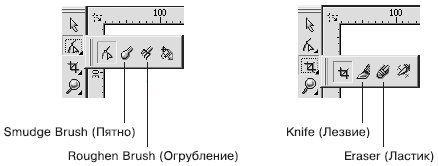
Рис. 9.1 Инструменты «растрового» происхождения
Инструмент Knife (Лезвие)
Инструмент Knife (Лезвие) предназначен для разделения объектов на части. Как в повседневной жизни лезвием ножа разрезают различные предметы, так и в программе CorelDRAW инструментом Knife (Лезвие) можно разделять на части фигуры.
Чтобы применить инструмент Knife (Лезвие), необходимо выполнить следующие действия.
-
Выделить объект.
-
Выбрать инструмент Knife (Лезвие) ().
-
Навести указатель мыши () на контур разрезаемой фигуры в место начала предполагаемого разреза.
-
Когда указатель примет вид вертикального ножа (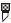), щелкнуть основной кнопкой мыши, обозначив место начала разреза.
-
Перевести указатель мыши на контур разрезаемой фигуры в место окончания предполагаемого разреза.
-
Когда указатель мыши примет вид вертикального ножа (), щелкнуть основной кнопкой, обозначив место окончания разреза.
Результат применения инструмента Knife (Лезвие) определяется настройками параметров, которые отображаются на панели свойств после выбора данного инструмента (рис. 9.2):
-
Leave As One Object (Оставить единым объектом) (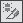). При нажатой данной кнопке итоговая фигура остается комбинированной и ее можно разбить на части, выполнив команду меню Arrange - Break Curve Apart (Разбить кривую на части). Если эта кнопка не нажата, то применение инструмента приводит к образованию двух независимых фигур;
-
Auto-Close On Cut (Замыкать кривую при разрезании) (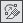). При нажатой данной кнопке контуры итоговых фигур или частей фигуры автоматически замыкаются. Если эта кнопка не нажата, то контуры разрезанных частей остаются разомкнутыми.

СОВЕТ. Если при нажатой кнопке Auto-Close On Cut (Замыкать кривую при разрезании) удерживать при разрезании основную кнопку мыши, то линия разреза пройдет по пути движения указателя мыши (рис. 9.3).
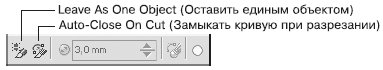
Рис. 9.2 Панель свойств при активном инструменте Knife (Лезвие)
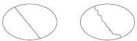
Рис. 9.3 Результаты применения инструмента Knife (Лезвие)
Инструмент Eraser (Ластик)
Инструмент Eraser (Ластик) является ярким представителем инструментов растровой графики. Однако в программе CorelDRAW он используется для удаления фрагментов векторных фигур.
Чтобы применить инструмент Eraser (Ластик), необходимо выполнить следующие действия.
-
Выделить объект.
-
Выбрать инструмент Eraser (Ластик) ().
-
Нажать основную кнопку мыши и, не отпуская ее, стереть фрагмент объекта.
-
Отпустить кнопку мыши.
Участки объекта, по которым пройдет указатель мыши, будут удалены, при этом объект превратится в кривые Безье. Редакторские изменения внешнего вида полученного объекта возможны на уровне узлов и сегментов, с помощью инструмента Shape (Форма) (). В общем случае в итоге получается комбинированная фигура, которую можно разбить на части, выполнив команду меню Arrange - Break Curve Apart (Расположение - Разбить кривую на части).
После выбора инструмента Eraser (Ластик) на панели свойств отображаются параметры, представленные на рис. 9.4.
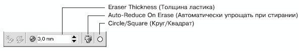
Рис. 9.4 Панель свойств при выбранном инструменте Eraser (Ластик)
Рассмотрим эти параметры:
-
Eraser Thickness (Толщина ластика) — толщина ластика;
-
Auto-Reduce On Erase (Автоматически упрощать при стирании). При нажатой данной кнопке контур, граничащий с удаляемой областью, формируется меньшим количеством узлов (рис. 9.5);
-
Circle/Square (Круг/Квадрат) — позволяет выбрать форму ластика.
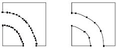
Рис. 9.5 Результат стирания ластиком фрагмента фигуры при ненажатой кнопке Auto-Reduce On Erase (Автоматически упрощать при стирании) (слева) и при нажатой данной кнопке (справа)
Инструмент Smudge Brush (Пятно)
Инструмент Smudge Brush (Пятно) (), как и инструмент Eraser (Ластик), является ярким представителем инструментов растровой графики. Проведем аналогию с рисованием масляными красками: когда краска еще сырая, ее можно размазывать по холсту, как масло по хлебу — точно так же можно искажать векторную фигуру путем "размазывания" контура фигуры.
Инструмент Smudge Brush (Пятно) можно использовать при работе с фигурами, представляющими собой кривые Безье, иначе объект будет преобразован в кривую Безье. Редакторские изменения внешнего вида полученного объекта также возможны на уровне узлов и сегментов с помощью инструмента Shape (Форма) ().
Чтобы применить инструмент Smudge Brush (Пятно), необходимо выполнить такие действия.
-
Выделить объект.
-
Выбрать инструмент Smudge Brush (Пятно) ().
-
Расположив указатель на контуре объекта, нажать основную кнопку мыши и, не отпуская ее, исказить контур.
-
Отпустить кнопку мыши.
Размер кисти и параметры искажения можно задать на панели свойств после выбора инструмента Smudge Brush (Пятно) (рис. 9.6).
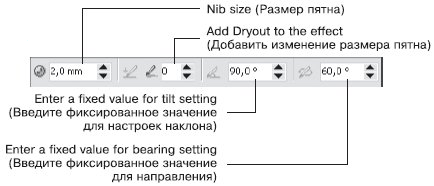
Рис. 9.6 Панель свойств при активном инструменте Smudge Brush (Пятно)
-
Nib size (Размер пятна) — размер пятна.
-
Add Dryout to the effect (Добавить изменение размера пятна) — придает "динамический" эффект изменения размера пятна в зависимости от длины штриха (траектории движения указателя мыши). Эффект может проявляться с уменьшением (значения от 1 до 10) или с увеличением размера пятна (значения от –1 до –10) (рис. 9.7).
-
Enter a fixed value for tilt setting (Введите фиксированное значение для настроек наклона). Данный параметр задает кругообразность пятна. Минимальное значение (15°) соответствует сплюснутому пятну, которое вырождается в плоское. Максимальное значение (90°) — круглое пятно (рис. 9.8).
-
Enter a fixed value for bearing setting (Введите фиксированное значение для направления). Данный параметр задает поворот кисти в плоскости рисования (от 0 до 359°) и используется, когда форма кисти отличается от круга (рис. 9.9).
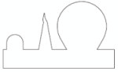
Рис. 9.7 Результат применения инструмента Smudge Brush (Пятно) с различными значениями параметра Add Dryout to the effect (Добавить изменение размера пятна): 0 (слева), 8 (в центре) и –10 (справа)
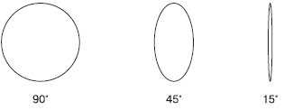
Рис. 9.8 Формы пятна при различных значениях наклона
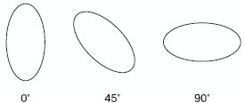
Рис. 9.9 Примеры поворота пятна
Инструмент Roughen Brush (Огрубление)
Более подходящий перевод для названия инструмента Roughen Brush — "Кисть", придающая "зазубренность", так как при применении вышеназванного инструмента на контур объекта накладывается именно эффект зазубренности (рис. 9.10).
Инструмент Roughen Brush (Огрубление) () позволяет превратить объект с гладким контуром в рваный, с острыми зубцеобразными краями.
Инструмент Roughen Brush (Огрубление) можно применять к фигурам, представляющим собой кривую Безье. Если фигура не является кривой Безье, то при попытке применить к ней инструмент Roughen Brush (Огрубление) программа предложит автоматически преобразовать объект в кривую Безье. Впоследствии внешний вид полученного объекта можно редактировать на уровне узлов и сегментов с помощью инструмента Shape (Форма) ().
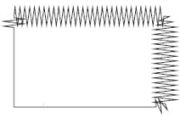
Рис. 9.10 Результат применения инструмента Roughen Brush (Огрубление)
Чтобы применить инструмент Roughen Brush (Огрубление), необходимо выполнить следующие действия.
-
Выделить объект.
-
Выбрать инструмент Roughen Brush (Огрубление) ().
-
Расположив указатель на контуре объекта, нажать основную кнопку мыши и, не отпуская ее, провести указатель вдоль контура. При этом контур будет становиться зазубренным.
-
Отпустить кнопку мыши.
Размер кисти и параметры искажения можно задать на панели свойств после выбора инструмента Roughen Brush (Огрубление) (рис. 9.11).
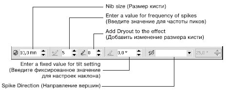
Рис. 9.11 Панель свойств при активном инструменте Roughen Brush (Огрубление)
Параметры, которые располагаются на панели свойств при активном инструменте Roughen Brush (Огрубление), во многом совпадают с параметрами при выбранном инструменте Smudge Brush (Пятно).
-
Nib size (Размер кисти) — размер кисти. Минимальный размер составляет 0,254 мм, максимальный — 50,8 мм.
-
Enter a value for frequency of spikes (Введите значение для частоты пиков) — количество зубцов,создаваемых на протяжении размера одной кисти (рис. 9.12). Диапазон значений составляет от 1 до 10.
-
Add Dryout to the effect (Добавить изменение размера кисти) — придает "динамический" эффект изменения частоты создания зубцов в зависимости от длины штриха (траектории движения указателя мыши). Данный эффект может проявляться с увеличением (значения от 1 до 10) или с уменьшением частоты (значения от –1 до –10) (рис. 9.13).
-
Enter a fixed value for tilt setting (Введите фиксированное значение для настроек наклона) — высота зазубрин: 90° соответствует максимальному значению, 0° — минимальному.
-
Spike Direction (Направление вершин) — направление зубцов.
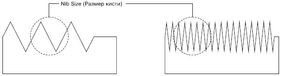
Рис. 9.12 Результат применения инструмента Roughen Brush (Огрубление) при частоте пиков, равной 1 (слева) и 5 (справа)
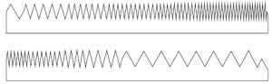
Рис. 9.13 Результат применения инструмента Roughen Brush (Огрубление) с положительным значением (вверху) и отрицательным значением (внизу) изменения размера кисти
Выводы
Рассмотренные в данной лекции инструменты относятся к инструментам художественного "растрового" редактирования векторных изображений (исключение составляет инструмент Knife (Лезвие)).